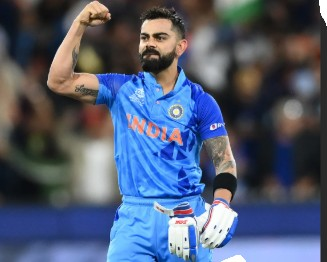
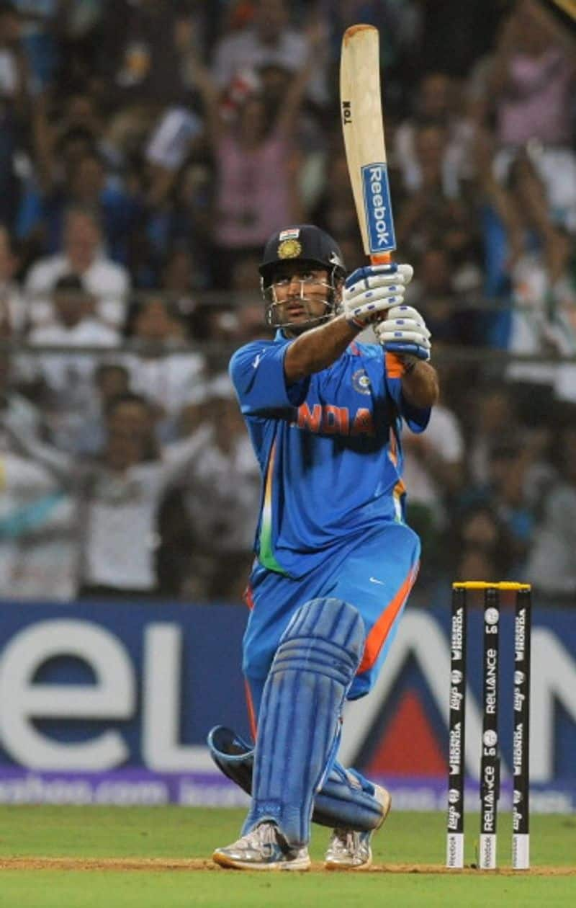
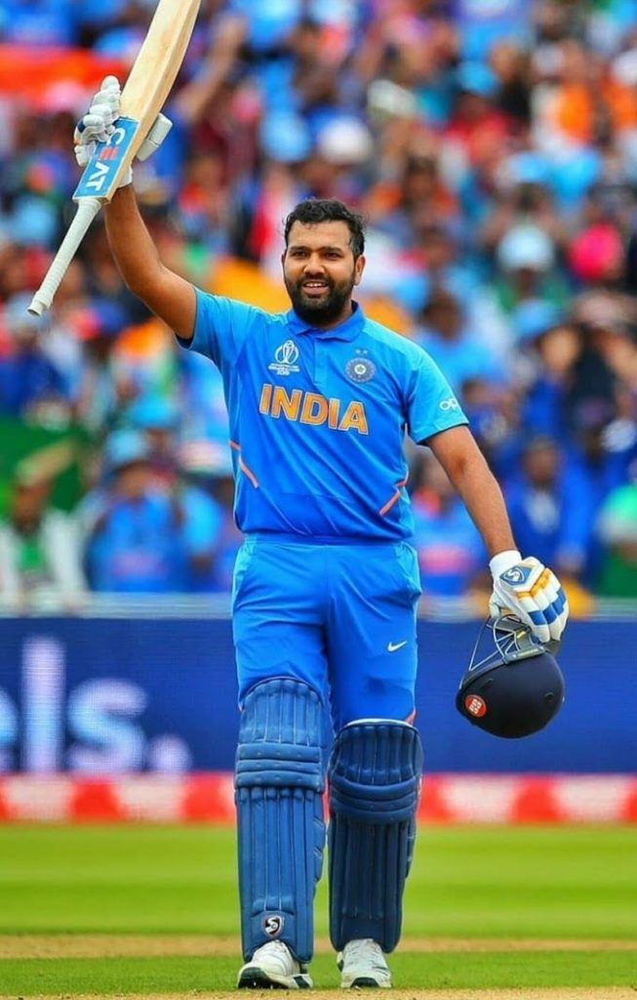

"The King of Cricket"
Virat Kohli is world renowed for his passion, fitness, and ability to chase down targets.
he is one of the greatest batsmen to ever play the game, holdinh numerous world records.

"The Captain Cool"
Under MS Dhoni's leadership, India won the 2007 T20 World Cup, 2011 ODI World Cup, and 2013 Champions Trophy.
He is famously known for his "Helicopter Shot" and lightning-fast stumping.

"The Hitman"
Rohit Sharma is the only player to score three double-centuries in One Day Internationals.
His elegant batting style and captaincy led India to global success in 2024.